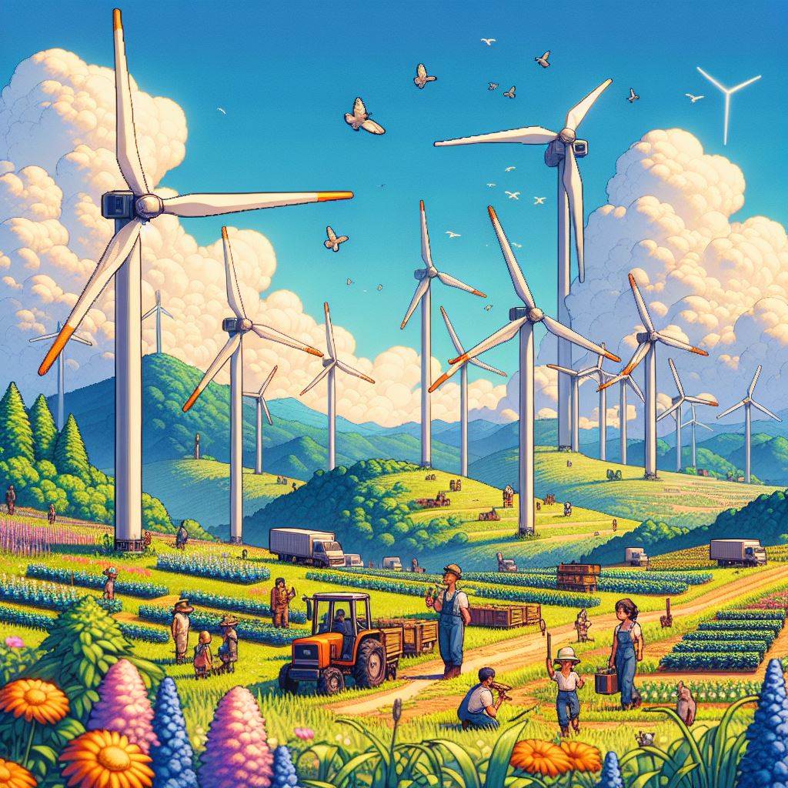
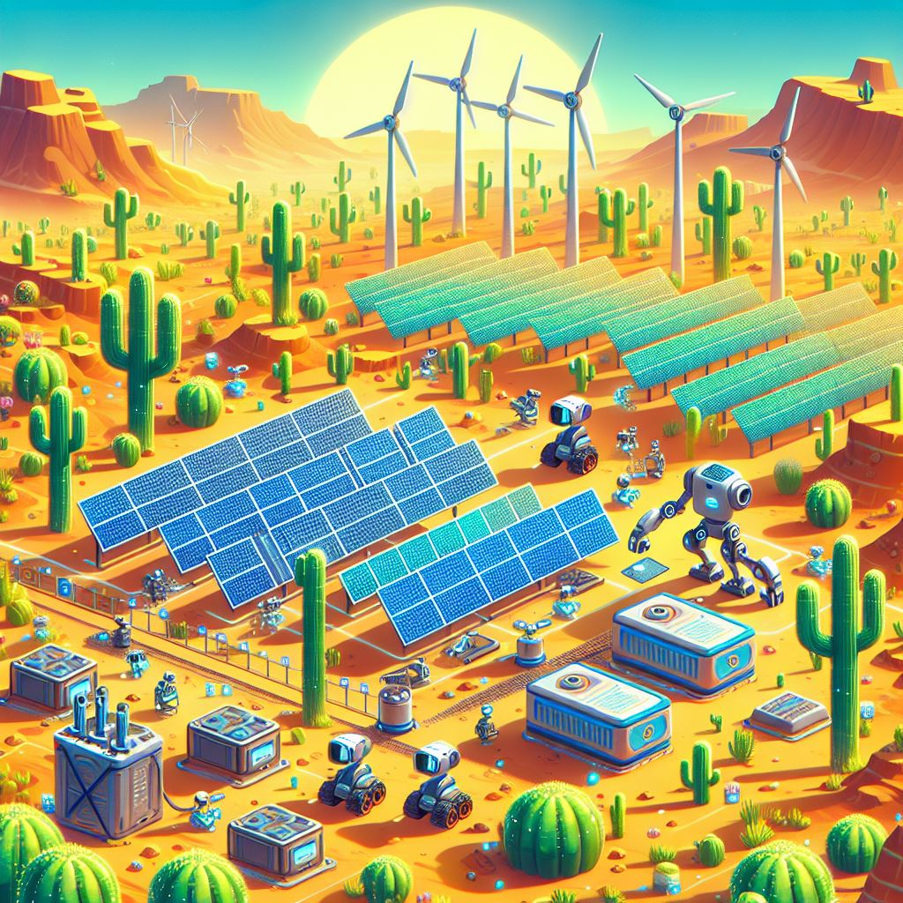
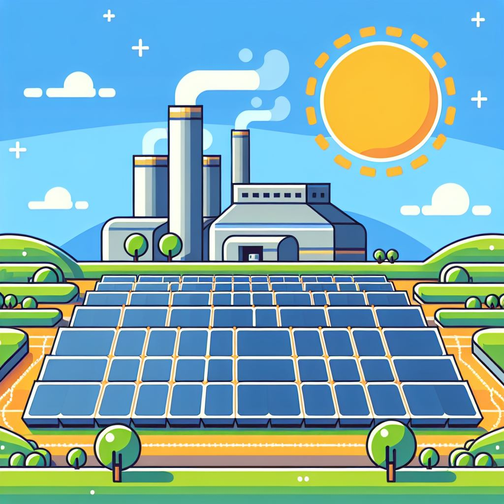

NASA Space Apps Challenge 2024
SDGs in the Classroom
Educación sostenible a través de imágenes satelitales y datos de la NASA


Energía Renovable y Alternativa

Peralta Wind Farm
UruguayFecha
18/12/2023Autor
Emily CassidyInstrumento
Landsat 8 — OLI

Energía Solar + Baterías
DesiertoFecha
07/02/2024Autor
Lindsey DoermannInstrumento
Landsat 9 — OLI-2

Planta Solar Más Grande
EuropaFecha
07/03/2020Autor
Kasha PatelInstrumento
Landsat 8 — OLI